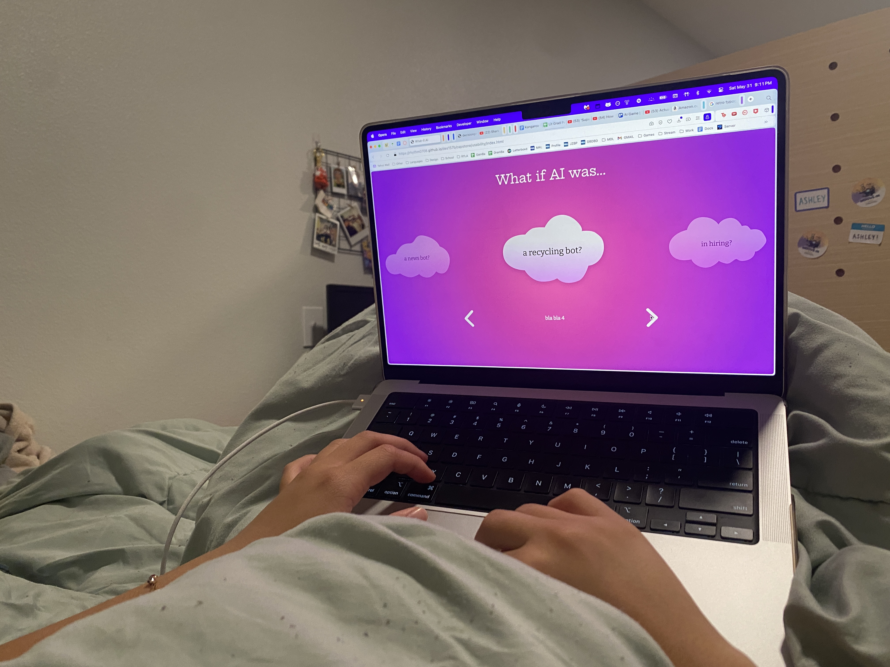
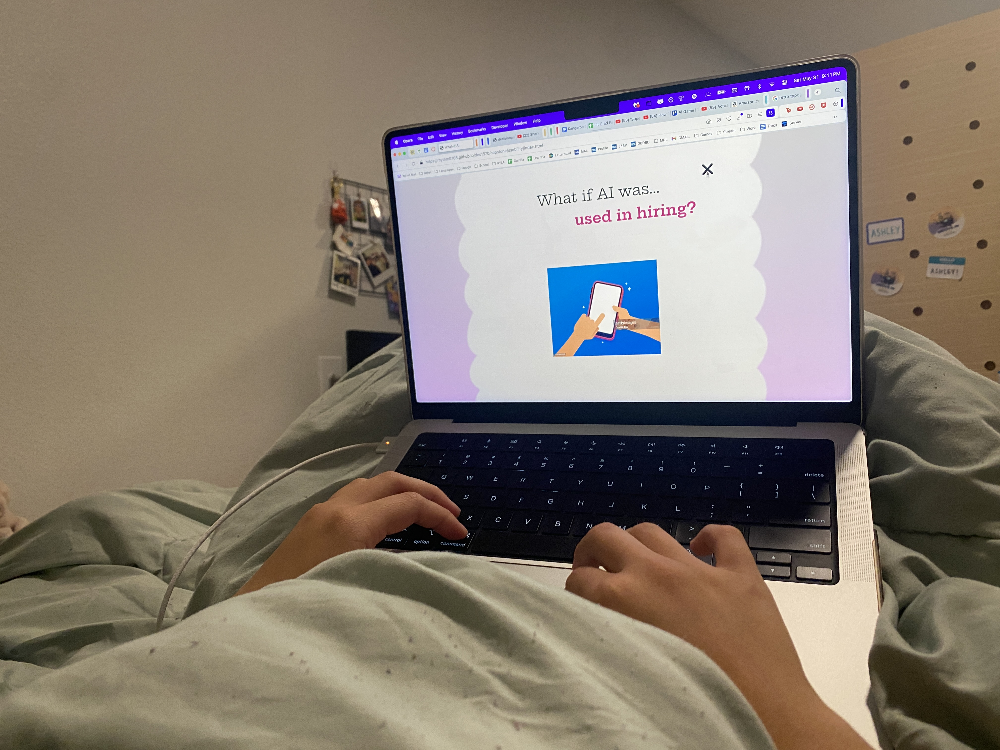

Usability Testing Results
How do I move forward?
Observations / Key Feedback
- Users found the site navigation intuitive and were able to move easily between the homepage and articles.
- The radial gradients applied to the Granim canvas were too similar, so the animation didn’t feel dynamic. I should choose a broader or more distinct color range to make the gradient animation more engaging.
- While users liked my draft article, they commented that it mainly described things that were happening right now (as opposed to being 'speculative' like I had intended).
Photos of Usability Testing


Steps Moving Forward
- Although I was busier than expected this week, I still managed to complete the core structure of the site and the main animations. This allowed me to get good feedback on the layout and concept of my site.
- Visually, users liked the smoothness of the transitions. However, the content did not have the impact I was looking for. Over the next two weeks, I plan to refine the depth of my storytelling and focus on more speculative aspects of my research (e.g. AI in hiring). This approach is likely to have more impact than describing current day practices.
- I also hope to continue developing graphics that support the content of my articles. After doing some more research, I'm curious about whether using external imagery (cited photographs, images of real technology) would be more effective. I'm also tempted to experiment with AI-generated visuals and data visualization through a charts library.
- Overall, testers clearly understood the simple content and purpose of my page, which is encouraging. Next I need to focus on producing the full set of content and making minor visual refinements to my page. It's important that I gather feedback on the site with all its content in place, because that will produce a more accurate reflection of the visitor experience. But for now, this feedback has been helpful for guiding the direction of my focus as I move into the next stage of development.